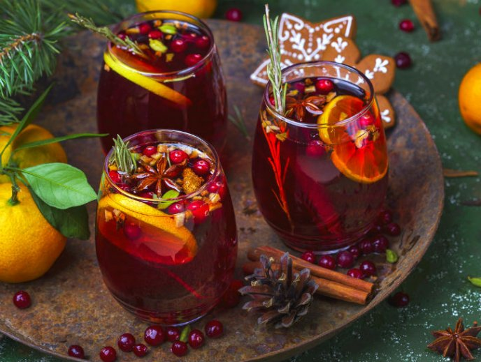

INGREDIENTES:
una olla suficientemente grande, disponer el agua, clavos de olor y palos de canela para llevarlos al fuego hasta que hierva; roto el hervor, adicionar el chocolate y removemos hasta derretirlo por completo. Dejar cocer la preparación durante 3 minutos a fin de que las especias desprendan sus sabores y aromas. Agregar poco a poco la leche fresca, cuidando de remover bien; una vez integrada, será momento de verter la leche evaporada, sin parar de mover. Cuando la preparación dé un pequeño hervor, adicionar la cucharada de mantequilla, lo que le dará además de brillo, un delicioso toque saladito a la bebida. Verificar que la mantequilla esté bien derretida, rectificar el dulzor y de no estar conforme, agregar azúcar al gusto, removiendo muy bien antes de retirar del fuego. Servir caliente y ¡a disfrutar!>
INGREDIENTES:
Pon las almendras a remojar en agua hirviendo y pélalas, licúalas con leche hasta que no tengan grumos Hierve la leche, agrega el azúcar y las almendras licuadas. No deje de mover la pala de madera hasta que esta se espese un poco. Retíralo del fuego. Junte las yemas con el ron y añádelas poco a poco sin dejar de batir hasta que se incorporen a la leche. Espere a que se enfrié y después enváselo en una botella de vidrio.
INGREDIENTES:

En una ollita a fuego medio, calienta el agua, agrega la jamaica, el azúcar, la canela, los clavo, el romero fresco, deja hervir y entonces añade la manzana. Cocina 10 minutos, retira del fuego y deja enfriar. En una jarra con hielos, acomoda la toronja, la guayaba, vierte la preparación anterior, el vino y el romero fresco. Sirve y disfruta frío.